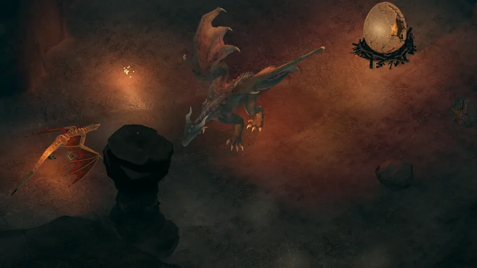
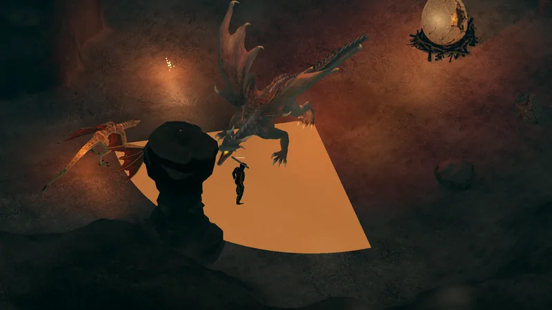

The Wyrms · Bruto
Greater Dragon
Historia
El wyrm pesado de cuatro patas que cuida el nido. No persigue: se planta y quema todo lo que tiene adelante.
En el juego




Comportamiento
GUARD MAUL BREATHE SCORCH HOLD LICK WOUNDS
- Te nota a 8 m (puede percibir hasta 13 m) y recuerda tu última posición durante 4 s después de perderte.
- Territorial: nunca persigue más allá de 14 m de su lugar; llevalo al borde y se da vuelta.
- Pelea a 0–3 m.
Ataques y habilidades
| Ataque | Forma | Daño | Tipo de daño | Carga | Área | Recarga | Recuperación |
|---|---|---|---|---|---|---|---|
| Ataque básico | Cuerpo a cuerpo | 10 | Físico (Armadura) | — | alcance 3,2 m | 1,8 s | — |
| Lick Wounds | Curación (canalizada) | +8% | — | 2,4 s | — | 26 s | 0,4 s |
| Firestorm Breath | Cono | 30 | Fuego (Resistencia) | 1,7 s | radio 8,5 m · 96° | 13 s | 1,4 s |
| Crushing Bite | Mordida | 22 | Físico (Armadura) | 0,7 s | 120° · alcance 3,4 m | 3,8 s | 0,5 s |
| Fire Bolt | Línea | 18 | Fuego (Resistencia) | 1,05 s | 5–14 m · ancho 1,6 m | 6 s | 0,7 s |
Toda habilidad se anuncia: primero carga, así que se puede leer.
- Lick Wounds — Recupera 8% de su vida (45 PV) cuando está por debajo de 55%, sin recibir golpes durante 5 s y lejos de su blanco. Cualquier golpe o aturdimiento corta la canalización.
- Firestorm Breath — Un abanico de 96° y 8,5 m desde la boca, en la dirección que fija al empezar. Necesita línea libre desde la criatura: pilares, columnas y ruinas lo bloquean. Andá a su flanco o detrás de la piedra. Lo reduce tu Resistencia.
- Crushing Bite — 3,4 m de alcance en un arco de 120° al frente. Sólo conecta si seguís adentro cuando termina la carga: salí o ponete detrás. Lo reduce tu Armadura.
- Fire Bolt — Una franja brillante de 1,6 m de ancho, de 5 a 14 m. Vuela en la dirección fijada, golpea al primer operador de la línea y se frena en la primera pared: salí de la franja. Necesita línea de visión para empezar. Lo reduce tu Resistencia.
Cómo enfrentarlo
- Cuida el nido y no te sigue lejos: llevalo al borde de su terreno y se da vuelta.
- Su aliento cubre un abanico amplio y pega fuerte: cuando se echa hacia atrás, andá a su flanco o detrás de un pilar.
- A distancia lanza un rayo de fuego pesado por una línea brillante: salí de la línea.
- Lento, duro y paciente: se cura si le das espacio, así que mantené la presión.
- Peleá cerca de pilares, columnas o ruinas: su cono necesita línea libre, así que la piedra es cobertura.
- Seguí pegándole: la curación sólo empieza cuando lo dejan tranquilo, y cualquier golpe la corta.
- Si sale mal, corré: abandona a 14 m de su lugar.
Botín
Se sortea una vez por muerte y cae alrededor del cuerpo. Cualquiera puede recogerlo.
| Objeto | Probabilidad | Cantidad |
|---|---|---|
| Scrap Component | 100% | 1 |
| Metal Coin | 100% | 80–160 |
| 80% | 2–3 | |
| 20% | 1 | |
| 40% | 1–2 |
Dónde encontrarlo
The Cinder Deep: el nido bajo el viejo acueducto, junto al huevo petrificado.
| Zona | Cantidad | Reaparición | No reaparece cerca | Grupo |
|---|---|---|---|---|
| The Cinder Deep | 1 | 150–210 s | 14 m | spawn.cinder_nest |
Experiencia
Vale 520 XP, repartidos según el daño entre todos los que lo hirieron. Muertes necesarias para subir desde el inicio de cada nivel:
| Nivel | XP necesaria | Muertes |
|---|---|---|
| 1 → 2 | 100 | 1 |
| 5 → 6 | 700 | 2 |
| 10 → 11 | 3 700 | 8 |
| 20 → 21 | 17 200 | 34 |
| 40 → 41 | 74 200 | 143 |